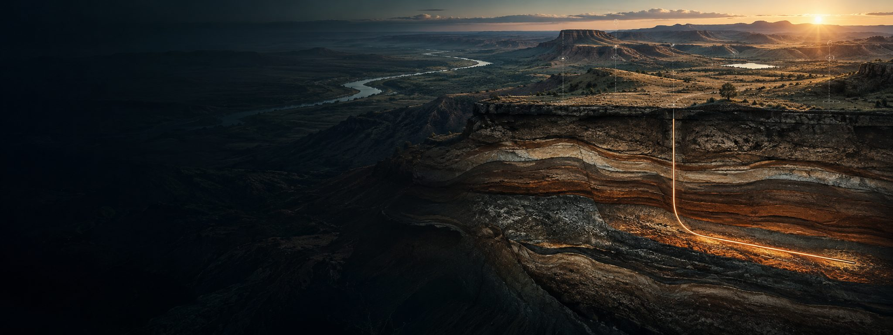

01
Well restarts
Shut-in and low-producing wellbores with a defensible route back online.

Whitefish works where others stopped looking: shut-in wellbores, bypassed intervals, stranded infrastructure, and acreage with more history than direction.
That means tracing title, testing the technical story, finding the operating constraint, and building a field plan around evidence—not enthusiasm.
It lives across assignments, completion reports, mud logs, production histories, formation picks, field equipment, and the people who know what happened.
Shut-in and low-producing wellbores with a defensible route back online.
Known wellbores with bypassed, untested, or poorly executed intervals.
Multiple wells and shared systems that reward a phased field-level plan.
Pipelines, disposal, power, compression, and systems tied to producible assets.
Helium, gas, and drillable acreage supported by geology and a credible route to market.
Start with the asset location, what you control, current status, and the technical information already available. Initial review creates no obligation to proceed.
tony@whitefishexploration.com